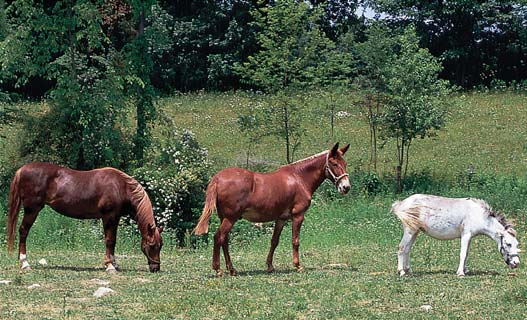

20 Especiación y macroevolución
426
Pájaro bobo de patas azules. Los pájaros bobos de patas azules son grandes aves marinas que anidan en las islas Galápagos y muchas otras islas áridas en el Pacífi co oriental. Las parejas macho y hembra son monógamas y por lo general anidan en lava negra. La población reproductora más grande de pájaros bobos de patas azules se encuentra en las islas Galápagos.
CONCEPTOS CLAVE
20.1 De acuerdo con el concepto de especie biológica, una especie consiste de individuos que pueden aparearse con éxito entre ellos, mas no con individuos de otra especie. 20.2 La evolución de diferentes especies comienza con el aislamiento reproductivo, en el que dos poblaciones ya no pueden aparearse con éxito. 20.3 En la especiación alopátrica, las poblaciones divergen en diferentes especies debido a aislamiento geográfi co o separación física. En la especiación simpátrica las poblaciones quedan aisladas reproductivamente una de otra a pesar de vivir en la misma área geográfi ca. 20.4 La especiación puede requerir millones de años, pero en ocasiones ocurre mucho más rápidamente. 20.5 La evolución de las especies y los taxones superiores se conoce como macroevolución.
U
na selva pluvial brasileña contiene miles de especies de insectos, anfi bios, reptiles, aves y mamíferos. La Gran Barrera de Arrecifes en la costa de Australia tiene miles de especies de esponjas, corales, moluscos, crustáceos, estrellas de mar y peces. Los diversos ambientes sobre la Tierra abundan en ricos ensamblajes de especies. En la actualidad, los científi cos han nombrado más o menos 1.8 millones de especies. No se sabe con exactitud cuántas especies existen hoy, ¡pero muchos biólogos estiman que el número está en el orden de 4 millones a 100 millones! Con frecuencia, esta diversidad se representa como muchas ramas en un “árbol de la vida”. Conforme uno sigue las ramas desde la punta hacia el cuerpo principal del árbol, forman conexiones que representan ancestros comunes que ahora están extintos. De hecho, más de 99.9% de todas las especies que alguna vez existieron ahora están extintas. Al seguir las ramas del árbol de la vida hasta conexiones cada vez más grandes conduce a la larga a un solo tronco que representa los pocos organismos unicelulares simples que evolucionaron temprano en la historia de la Tierra y se convirtieron en ancestros de todas las especies que viven en la actualidad.
© iStockphoto.com/Mariko Yuki
Especiación y macroevolución 427
En consecuencia, la vida de hoy es el producto de 3 a 4 mil millones de años de evolución. ¿Cómo se diversifi caron todas estas especies a lo largo de la historia de la Tierra? Los estudios de Darwin lo condujeron a concluir que las islas Galápagos fueron el lugar de nacimiento de muchas nuevas especies (vea la fotografía). La comprensión de cómo evolucionaron las especies avanzó de manera signifi cativa desde que Darwin publicó El origen de las especies . En este capítulo se consideran las barreras reproductivas que aíslan a las especies unas de otras y los posibles mecanismos evolutivos que explican cómo los millones de especies que viven hoy o vivieron en el pasado se originaron a partir de especies ancestrales. Luego examina la tasa de cambio evolutivo y la evolución de las categorías taxonómicas superiores (especie, género, familia, orden, clase y fi lo), que es el foco de la macroevolución.
20.1 ¿QUÉ ES UNA ESPECIE?
OBJETIVO DE APRENDIZAJE
1 Describir el concepto de especie biológica y mencionar dos problemas potenciales con el concepto.
El concepto de distintos tipos de organismos, conocidos como especie (del latín species que signifi ca “tipo”), no es nuevo. Sin embargo, existen muchas defi niciones distintas de especie, y cada una tiene algún tipo de limitación. Linnaeus fue el biólogo del siglo xviii que fundó la taxonomía moderna: la ciencia de nombrar, describir y clasifi car los organismos. Él clasifi có plantas y otros organismos en especies separadas con base en sus diferencias estructurales visibles, como plumas o número de partes de la fl or. Este método, conocido como concepto de especie morfológica , todavía se utiliza para ayudar a caracterizar a las especies, pero las meras diferencias estructurales no son adecuadas para explicar qué constituye una especie.
El concepto de especie biológica se basa en el aislamiento reproductivo
La genética de poblaciones hizo mucho para aclarar el concepto de especie. De acuerdo con el concepto de especie biológica , que expresó por primera vez el biólogo evolutivo Ernst Mayr en 1942, una especie consiste de una o más poblaciones cuyos miembros se aparean en la naturaleza para producir descendencia fértil y no se aparean con (esto es, están aislados reproductivamente) miembros de diferentes especies. El fl ujo genético ocurre entre los individuos de una especie cuando se aparean, pero barreras reproductivas restringen a los individuos de una especie para aparearse, o intercambiar genes, con miembros de otra especie. Como resultado, las barreras reproductivas mantienen a una especie dada genéticamente distinta de otra. Una extensión del concepto de especie biológica sostiene que las nuevas especies evolucionan cuando las poblaciones que antes se apareaban quedan reproductivamente aisladas unas de otras. El concepto de especie biológica es en la actualidad la defi nición de especie más aceptada, pero tiene varias limitaciones. Un problema con el concepto de especie biológica es que sólo se aplica a los organismos que se reproducen sexualmente. La reproducción de las bacterias es asexual, aunque pueden tener considerable intercambio de material genético mediante transferencia horizontal de genes entre individuos
bacteriales que se clasifi can como especies diferentes. Por ende, el aislamiento reproductivo no es un buen criterio para defi nir especies de bacterias. Los pequeños animales marinos conocidos como rotíferos inmortales son un ejemplo de animales que se reproducen asexualmente ( FIGURA 20-1 ). Todos los rotíferos inmortales son hembras y producen descendencia sin necesidad de machos. Estos organismos y también los organismos extintos deben clasifi carse con base en sus características estructurales y bioquímicas; el concepto de especie biológica no se aplica a ellos. Otro problema potencial con el concepto de especie biológica es que, aunque los individuos asignados a diferentes especies usualmente no se aparean entre ellos, en ocasiones pueden tener cruzas exitosas. Por ejemplo, donde sus territorios se solapan, se tienen noticias de que algunos coyotes se aparean con lobos. Como resultado, algunos lobos portan genes de coyote y viceversa. Sin embargo, la mayoría de los biólogos concuerda en que lobos y coyotes son especies separadas.
El concepto de especie fi logenética defi ne las especies con base en evidencia como la secuenciación molecular
Algunos biólogos prefi eren el concepto de especie fi logenética , también llamado concepto de especie evolutiva , en el que una población se
Wim van Egmond/Visuals Unlimited, Inc.
150 μ m
FIGURA 20-1 Rotífero inmortal ( Philodina roseola ) Los rotíferos inmortales son todas hembras. Dado que no se reproducen sexualmente, es difícil clasifi car a estos pequeños animales marinos como especies de acuerdo con el concepto de especie biológica.
428 Capítulo 20
La mayoría de las especies tienen dos o más mecanismos que bloquean la posibilidad de que individuos de dos especies cercanamente emparentadas superen un solo mecanismo de aislamiento reproductivo. Aunque la mayoría de los mecanismos operan antes de que ocurra la copulación o la fecundación ( precigóticos ), otros funcionan después de que tiene lugar la fecundación ( postcigóticos ).
Las barreras precigóticas interfi eren con la fecundación
Las barreras precigóticas son mecanismos de aislamiento reproductivo que evitan la fecundación. Puesto que los gametos macho y hembra nunca entran en contacto, jamás se produce un cigoto interespecífi co; esto es, un óvulo fecundado que se forma por la unión de un óvulo de una especie y un espermatozoide de otra especie. Las barreras precigóticas incluyen aislamientos de diversos tipos: temporal, de hábitat, conductual, mecánico y gamético. En ocasiones el intercambio genético entre dos grupos se evita porque se reproducen en diferentes momentos del día, la estación o el año. Dichos ejemplos demuestran aislamiento temporal . Por ejemplo, dos especies muy similares de mosca de la fruta, Drosophila pseudoobscura y D. persimilis , tienen rangos que se solapan en gran medida, pero no se cruzan entre ellas. La Drosophila pseudoobscura es sexualmente activa sólo en la tarde y la D. persimilis sólo en la mañana. De igual modo, dos especies de ranas tienen rangos que se solapan en el este de Canadá y Estados Unidos. La rana de la madera ( Rana sylvatica ) por lo general copula a fi nales de marzo o principios de abril, cuando la temperatura del agua es de aproximadamente 7.2°C, mientras la rana leopardo del norte ( R. pipiens ) comúnmente copula a mediados de abril, cuando la temperatura del agua es 12.8°C ( FIGURA 20-2 ). Aunque dos especies cercanamente emparentadas pueden encontrarse en la misma área geográfi ca, por lo general viven y crían en diferentes hábitats en dicha área. Esto brinda aislamiento de hábitat entre las dos especies. Por ejemplo, las cinco especies de aves pequeñas conocidas como atrapamoscas (papamoscas) son casi idénticas en apariencia y tienen rangos que se solapan en la parte este de América del Norte. Ellas presentan aislamiento de hábitat porque, durante la temporada de reproducción, cada especie permanece en un hábitat particular dentro
declara como especie separada si experimentó sufi ciente evolución para que surjan diferencias signifi cativas estadísticamente en caracteres diagnósticos. Si una población tiene un carácter diagnóstico único (por ejemplo, un conjunto de espinas que corren por la espalda) que puede demostrarse es hereditario, entonces esta población se considera una especie separada. Este enfoque tiene la ventaja de ser verifi cable al comparar secuencias de genes entre dos grupos. Sin embargo, muchos biólogos no quieren abandonar el concepto de especie biológica, en parte porque el concepto de especie fi logenética no puede aplicarse si la historia evolutiva (como determina la secuenciación de ADN) de un grupo taxonómico no se ha estudiado con cuidado; la mayoría de los grupos no se han analizado con rigor. Además, si el concepto de especie fi logenética se aceptara universalmente, el número de especies nombradas quizá se duplicaría. Este aumento ocurriría porque muchas poblaciones estrechamente relacionadas que se clasifi can como subespecies (una subdivisión taxonómica de una especie) de acuerdo con el concepto de especie biológica cumplirían los requisitos de especie separada según el concepto de especie fi logenética. Por ende, la defi nición exacta de especie sigue siendo borrosa. A menos que se indique con claridad lo contrario, cuando en este texto se mencione especie , se hará referencia al concepto de especie biológica.
Repaso
■ ¿Qué es una especie, de acuerdo con el concepto de especie biológica? ¿Cuáles son algunas de las limitaciones de esta defi nición?
20.2 AISLAMIENTO REPRODUCTIVO
OBJETIVO DE APRENDIZAJE
2 Explicar el signifi cado de los mecanismos de aislamiento reproductivo y distinguir entre las diversas barreras precigóticas y postcigóticas.
Varios mecanismos de aislamiento reproductivo evitan el apareamiento entre dos diferentes especies cuyos rangos (áreas donde vive cada una) se solapan. Dichos mecanismos conservan la integridad genética de cada especie porque evitan el fl ujo genético entre las dos especies.
Marzo 1 Abril 1 Mayo 1
Actividad copulatoria
Rana de bosque Rana leopardo
La rana de la madera ( Rana sylvatica ) copula a principios de la primavera, con frecuencia antes de que el hielo se funda por completo en los estanques.
La rana leopardo ( Rana pipiens ) usualmente se aparea algunas semanas después.
Gráfica de actividad copulatoria pico en ranas de bosque y leopardo. En la naturaleza, las ranas de bosque y leopardo no se cruzan.
L. & D. Klein/Photo Researchers, Inc.
© Jason Patrick Ross/Shutterstock
FIGURA 20-2 Animada Aislamiento temporal en ranas de la madera y leopardo
Especiación y macroevolución 429
estas dos especies tienen vocalizaciones específi cas muy diferentes para atraer hembras de sus especies con el fi n de aparearse. Dichas vocalizaciones refuerzan el aislamiento reproductivo de cada especie. En ocasiones, los miembros de diferentes especies se cortejan e incluso tratan de copular, pero las estructuras incompatibles de sus órganos genitales evitan el apareamiento exitoso. Las diferencias estructurales que inhiben el apareamiento entre especies producen aislamiento mecánico . Por ejemplo, muchas especies de plantas con fl ores tienen diferencias físicas en las partes de su fl or que les ayudan a mantener su aislamiento reproductivo mutuo. En tales plantas, las partes de la fl or están adaptadas para insectos polinizadores específi cos. Por ejemplo, dos especies de salvias tienen rangos que se solapan en el sur de California. La salvia negra ( Salvia mellifera ), que es polinizada por pequeñas abejas, tiene una estructura fl oral diferente a la de la salvia blanca ( S. apiana ), que es polinizada por grandes abejas carpinteras ( FIGURA 20-4 ). Es interesante que las salvias negra y blanca también evitan el apareamiento mediante una barrera temporal: la salvia negra fl orece a principio de la primavera y la salvia blanca fl orece a fi nales de la primavera y principios de verano. Se presume que el aislamiento mecánico evita que los insectos realicen polinización cruzada de las dos especies en caso de que fl orezcan al mismo tiempo. Si el apareamiento tiene lugar entre dos especies, sus gametos pueden no combinarse. Diferencias moleculares y químicas entre especies generan aislamiento gamético , en el que óvulo y espermatozoide de diferentes especies son incompatibles. En los animales acuáticos que liberan de manera simultánea sus óvulos y espermatozoides en el agua circundante, la fecundación interespecífi ca es extremadamente rara. La superfi cie del óvulo contiene proteínas específi cas que sólo se enlazan con moléculas complementarias en la superfi cie de los espermatozoides de la misma especie (vea el capítulo 51). Un tipo similar de reconoci-
de su rango, de modo que las potenciales parejas sexuales de diferentes especies no se encuentran. El atrapamoscas mínimo ( Empidonax minimus ) frecuenta bosques, granjas y huertos abiertos; mientras que el atrapamoscas verdoso ( E. virescens ) se encuentra en bosques caducifolios, particularmente en hayas y bosques pantanosos. El atrapamoscas ailero ( E. alnorum ) prefi ere matorrales de alisos húmedos, el atrapamoscas vientre amarillo ( E. fl aviventris ) anida en bosques de coníferas y el atrapamoscas saucero ( E. traillii ) frecuenta pastizales con arbustos y sauces. Muchas especies de animales intercambian una serie distintiva de señales antes de copular. Dichos comportamientos de cortejo ilustran el aislamiento conductual (también conocido como aislamiento sexual ). Los ave del paraíso, por ejemplo, muestran patrones de cortejo específi cos de la especie. El macho de ave del paraíso de Australia construye un elaborado emparrado de ramas, y agrega plumas azules y fl ores blancas decorativas en la entrada ( FIGURA 20-3 ). Cuando una hembra se aproxima al emparrado, el macho baila alrededor de ella y sostiene en su pico una decoración particularmente atrayente. Mientras baila, esponja sus plumas, extiende sus alas y entona un canto de cortejo que consiste en varios sonidos, incluidos fuertes zumbidos y aullidos. Estos comportamientos de cortejo específi cos mantienen a especies de aves cercanamente emparentadas en aislamiento reproductivo del ave del paraíso. Si un macho y una hembra de dos especies de emparradores diferentes comienzan el cortejo, se detienen cuando un miembro no reconoce o no responde a las señales del otro. Otro ejemplo de aislamiento conductual involucra a las ranas de la madera y las ranas leopardo recién mencionadas como ejemplo de aislamiento temporal. Los machos de
FIGURA 20-3 Aislamiento comportamental en emparradores Cada especie de emparrador tiene patrones de cortejo muy especializados que evitan su apareamiento con otras especies. El macho de ave del paraíso ( Ptilonorhynchus violacens ) construye un lugar cerrado, o emparrado, con ramas para atraer una hembra. (El emparrado es el “túnel” oscuro a la izquierda). Observe las fl ores blancas y las decoraciones azules, incluidos objetos fabricados por los humanos, como tapas de botellas, que coloca en la entrada de su emparrado.
R. Brown/VIREO
El pétalo de la salvia negra funciona como plataforma de aterrizaje para las abejas pequeñas. Las abejas grandes no pueden encajar en esta plataforma.
La plataforma de aterrizaje más grande y los estambres más largos de la salvia blanca permiten la polinización por parte de abejas carpinteras de California más grandes (una especie diferente). Si abejas más pequeñas aterrizan en la salvia blanca, sus cuerpos no se frotan contra los estambres. (En la figura se removió la parte superior de la flor de salvia blanca).
FIGURA 20-4 Aislamiento mecánico en salvia negra y salvia blanca Las diferencias en sus estructuras fl orales permiten a la salvia negra y a la salvia blanca ser polinizadas por diferentes insectos. Puesto que las dos especies explotan diferentes polinizadores, no pueden cruzarse.
430 Capítulo 20
neración F 2 de una cruza entre dos especies de girasoles fue de 80%. En otras palabras, 80% de la generación F 2 fue defectuosa en alguna forma y no podía reproducirse con éxito. La degradación del híbrido también ocurre en las generaciones F 3 y posteriores. La TABLA 20-1 resume las diversas barreras precigóticas y postcigóticas que evitan el entrecruzamiento de dos especies.
Los biólogos descubren genes responsables de los mecanismos de aislamiento reproductivo
Se han hecho avances en la identifi cación de algunos de los genes involucrados en el aislamiento reproductivo. Por ejemplo, científi cos han determinado la base genética del aislamiento precigótico en especies de abulón, grandes moluscos que se encuentran a lo largo de la costa del Pacífi co de América del Norte. En los abulones, la fecundación del óvulo por los espermatozoides requiere lisina , una proteína del espermatozoide que se une a una proteína receptora de lisina ubicada en el recubrimiento del óvulo. Después de la unión, la lisina produce un agujero en el recubrimiento del óvulo que permite al espermatozoide penetrar en el óvulo. Los científi cos clonaron el gen receptor de lisina y demostraron que este gen varía entre especies de abulón. Diferencias en la proteína receptora de lisina en varias especies de abulones determinan la compatibilidad del espermatozoide con el óvulo. El espermatozoide de una especie de abulón no se une a una proteína receptora de lisina de un óvulo de una especie diferente de abulón. Otros genes relacionados con los mecanismos de aislamiento reproductivo, a los que de manera imprecisa se les refi ere como “genes de especiación”, se han identifi cado en un grupo diverso de organismos, como el ratón de playa de Florida, pinzones de cacto, especies de mosca de la fruta ( Drosophila ) y papamoscas en el Pacífi co sur.
Repaso
■ ¿Qué barreras evitan que las ranas de la madera y las ranas leopardo se apareen en la naturaleza?
■ ¿En qué se diferencia el aislamiento temporal del aislamiento conductual?
■ ¿En qué se diferencia el aislamiento mecánico del aislamiento gamético?
■ ¿De cuál barrera postcigótica es ejemplo la mula?
20.3 ESPECIACIÓN
OBJETIVOS DE APRENDIZAJE
3 Explicar el mecanismo de especiación alopátrica y proporcionar un ejemplo. 4 Explicar los mecanismos de especiación simpátrica y proporcionar ejemplos tanto de plantas como de animales.
Ahora el lector está listo para considerar cómo pueden surgir especies por completo nuevas a partir de las ya existentes. La evolución de una nueva especie se llama especiación . La formación de dos especies a partir de una sola ocurre cuando una población se aísla reproductivamente de otras poblaciones de la especie y los acervos genéticos de las dos poblaciones separadas comienzan a divergir en composición genética. Cuando una población es sufi cientemente diferente de su especie ancestral, de modo que ya no hay intercambio genético entre ellas, se considera que ocurrió especiación. La especiación ocurre en dos formas: especiación alopátrica y especiación simpátrica.
miento molecular ocurre con frecuencia entre los granos de polen y el estigma (superfi cie receptora de la parte femenina de la fl or). De modo que el polen no germina en el estigma de una especie de planta diferente.
Las barreras postcigóticas evitan el fl ujo genético cuando ocurre fecundación
En ocasiones ocurre fecundación entre gametos de dos especies cercanamente emparentadas a pesar de la existencia de barreras precigóticas. Cuando esto sucede, entran en juego barreras postcigóticas que aumentan la probabilidad de falla reproductiva. Por lo general, el embrión de un híbrido interespecífi co aborta de manera espontánea. El desarrollo , la secuencia ordenada de eventos que ocurren conforme crece y madura un organismo, es un proceso complejo que requiere la interacción y la coordinación precisas de muchos genes. Parece que los genes de progenitores que pertenecen a diferentes especies no interactúan de manera adecuada para regular los mecanismos del desarrollo normal. En este caso, el aislamiento reproductivo ocurre mediante inviabilidad del híbrido . Por ejemplo, en las cruzas entre diferentes especies de lirios, los embriones mueren antes de llegar a la madurez. De igual modo, casi todos los híbridos mueren en la etapa embrionaria cuando los óvulos de una rana de la madera se fecundan artifi cialmente con espermatozoides de una rana leopardo. Si un híbrido interespecífi co sobrevive, es posible que sea estéril, por varias razones. Los animales híbridos pueden presentar comportamientos de cortejo incompatibles con los de cualquiera de las especies progenitoras y como resultado no se aparearán. Con más frecuencia, la esterilidad del híbrido ocurre cuando problemas durante la meiosis hacen que los gametos de un híbrido interespecífi co sean anormales. La esterilidad del híbrido es particularmente común si las dos especies progenitoras tienen diferente número de cromosomas. Por ejemplo, una mula es descendiente de una yegua (2 n = 64) y un burro (2 n = 62) ( FIGURA 20-5 ). Este tipo de unión casi siempre resulta en descendencia estéril (2 n = 63) porque la sinapsis (el apareamiento de cromosomas homólogos durante la meiosis) y la segregación de los cromosomas no puede ocurrir de manera adecuada. Ocasionalmente, el apareamiento entre dos híbridos F 1 produce una segunda generación híbrida (F 2 ). El híbrido F 2 puede presentar degradación del híbrido , la incapacidad de un híbrido para reproducirse debido a algún defecto. Por ejemplo, la degradación del híbrido en la ge-
FIGURA 20-5 Esterilidad de híbridos en mulas Las mulas son híbridos interespecífi cos formados por apareamiento de una yegua ( izquierda ) con un burro ( derecha ). Aunque la mula ( centro ) presenta características valiosas de cada uno de sus progenitores, es estéril.
John Eastcott/Yva Momatiuk/Earth Scenes/Animals Animals

Animada Mecanismos de aislamiento reproductivo
Mecanismo Cómo funciona Ejemplo
Barreras precigóticas evitan la fecundación
Aislamiento temporal Especies similares se reproducen en épocas diferentes
Dos especies de mosca de la fruta del género Drosophila viven en la misma área geográfi ca, pero una es sexualmente activa sólo en la tarde y la otra sólo en la mañana.
Aislamiento de hábitat Especies similares se reproducen en hábitats diferentes
Varias especies de atrapamoscas del género Empidonax viven en la misma área geográfi ca pero en diferentes hábitats; por ejemplo, el atrapamoscas mínimo en bosques, granjas y huertos abiertos, y el atrapamoscas verdoso en bosques caducifolios y pantanosos.
Aislamiento conductual Especies similares tienen distintos comportamientos de cortejo
El macho de ave del paraíso de Australia construye un elaborado emparrado, baila alrededor de la hembra y entona un canto específi co de cortejo que mantiene a las especies de emparradores cercanamente emparentadas en aislamiento reproductivo del ave del paraíso.
Aislamiento mecánico Especies similares tienen diferencias estructurales en sus órganos reproductores
La salvia negra (género Salvia ) es polinizada por abejas pequeñas, mientras que la salvia blanca es polinizada por grandes abejas carpinteras. Debido a diferencias en las estructuras fl orales, ningún tipo de abeja puede polinizar con éxito a la otra especie de salvia.
Aislamiento gamético Gametos de especies similares son químicamente incompatibles
En los animales acuáticos como las esponjas, que liberan simultáneamente sus óvulos y espermatozoides en el agua, la fertilización interespecífi ca rara vez ocurre, porque la superfi cie del óvulo es compatible sólo con la superfi cie del espermatozoide de la misma especie.
Barreras postcigóticas reducen la viabilidad o fertilidad del híbrido
Inviabilidad del híbrido Híbrido interespecífi co muere en etapa temprana de desarrollo embrionario
En las cruzas entre diferentes especies de lirios (género Iris ), la fecundación ocurre, pero el embrión en las semillas muere antes de llegar a la madurez.
Esterilidad del híbrido Híbrido interespecífi co sobrevive hasta la adultez pero no puede reproducirse con éxito
Una mula, el descendiente de una yegua y un burro, tiene descendencia estéril porque la sinapsis y la segregación de los cromosomas no ocurren de manera adecuada durante la formación del gameto.
Degradación de híbridos Descendencia de híbrido interespecífi co es incapaz de reproducirse con éxito
En una cruza entre dos especies de girasoles, la mayor parte de la generación F 2 es defectuosa en alguna forma y no puede reproducirse con éxito. La degradación del híbrido también ocurre en generaciones posteriores.
TABLA 20-1


432 Capítulo 20
de la última Edad de Hielo. Dichos lagos estaban poblados por una o muchas especies de peces cachorrito. Con el tiempo el clima se volvió más seco y los grandes lagos se secaron, lo que dejó estanques aislados. Se presume que cada estanque contenía una pequeña población de peces cachorrito que gradualmente divergieron a partir de la especie ancestral común mediante deriva genética y selección natural en respuesta a diferencias de hábitat: las altas temperaturas, elevadas concentraciones de sal y bajos niveles de oxígeno característicos de los manantiales del desierto. En la actualidad, existen más o menos 20 especies, subespecies y poblaciones distintas en el área del Valle de la Muerte, California, y Ash Meadows, Nevada ( FIGURA 20-6 ). Muchas, como el pez cachorrito del Agujero del Diablo y el pez cachorrito de Owens, están restringidas a uno o dos manantiales aislados. La especiación alopátrica también ocurre cuando una población pequeña migra o se dispersa (como, por ejemplo, debido a una tormenta ocasional) y coloniza una nueva área lejos del rango de la especie original. Esta colonia está geográfi camente aislada de su especie parental y los pequeños cambios microevolutivos que se acumulan en el acervo genético aislado a lo largo de muchas generaciones pueden ser sufi cientes para formar una nueva especie con el paso del tiempo. Dado que las islas proporcionan el aislamiento geográfi co requerido para la especiación alopátrica, ofrecen excelentes oportunidades para estudiar este mecanismo evolutivo. Por ejemplo, es probable que algunos individuos de algunas pocas especies colonizaran las islas Galápagos y las islas hawaianas. Se supone que los cientos de especies únicas que se encuentran actualmente en cada isla descendieron de estos colonizadores originales ( FIGURA 20-7 ). La especiación es más probable que ocurra si la población original aislada es pequeña. Recuerde del capítulo 19 que la deriva genética, incluido el efecto fundador, tiene más consecuencias en las poblaciones pequeñas. La deriva genética tiende a resultar en cambios rápidos en las frecuencias alélicas de una pequeña población aislada. Las diferentes presiones selectivas del nuevo ambiente al que se expone la población acentúan aún más la divergencia causada por la deriva genética.
El prolongado aislamiento físico y las diferentes presiones selectivas resultan en especiación alopátrica
La especiación que ocurre cuando una población queda geográfi camente separada del resto de la especie y después evoluciona mediante selección natural y/o deriva genética se conoce como especiación alopátrica (del griego allo , “diferente”, y patri , “tierra natal”). Recuerde del capítulo 18 que la selección natural ocurre conforme los individuos que poseen adaptaciones favorables al ambiente sobreviven y se convierten en progenitores de la siguiente generación. La deriva genética es un cambio aleatorio en la frecuencia alélica que resulta de los efectos del azar sobre la sobrevivencia y el éxito reproductivo de los individuos en una pequeña población de crianza (vea el capítulo 19). Tanto la selección natural como la deriva genética resultan en cambios en las frecuencias alélicas en una población, pero sólo en la selección natural el cambio en la frecuencia alélica es adaptativa. La especiación alopátrica es el método más común de especiación y es responsable de casi toda la evolución de las nuevas especies animales. El aislamiento geográfi co requerido para la especiación alopátrica puede ocurrir en varias formas. La superfi cie de la Tierra está en un constante estado de cambio. Dicho cambio incluye ríos que desvían sus cursos, glaciares que migran, formación de cordilleras montañosas y de puentes terrestres que separan poblaciones acuáticas antes unidas, y la reducción de grandes lagos en varios estanques más pequeños separados geográfi camente. Lo que puede ser la imposición de una barrera geográfi ca para una especie puede no tener consecuencias para otra. Aves y espadañas, por ejemplo, no quedan aisladas cuando un lago se reduce a estanques más pequeños; las aves vuelan fácilmente de un estanque a otro, y las espadañas dispersan su polen y frutos mediante corrientes de aire. Los peces, en contraste, por lo general no pueden cruzar las barreras terrestres entre los estanques y por tanto quedan aislados reproductivamente. En la región del Valle de la Muerte de California y Nevada, se formaron grandes lagos interconectados durante los climas más húmedos
©Stone Nature Photography/Alamy
©Stone Nature Photography/Alamy
Pez cachorrito del Agujero del Diablo ( Cyprinodon diabolis ), fotografiado en el Agujero del Diablo, Refugio Nacional de la Vida Salvaje Ash Meadows, Nevada.
Pez cachorrito amargosa de Ash Meadows ( Cyprinodon nevadensis ssp. mionectes ), fotografiado en Point of Rocks Springs, Refugio Nacional de la Vida Salvaje Ash Meadows, Nevada.
FIGURA 20-6 Especiación alopátrica de peces cachorrito ( Cyprinodon ) Aquí se muestran dos especies de pez cachorrito que evolucionaron cuando los lagos más grandes en el sur de Nevada se secaron hace aproximadamente 10,000 años, lo que dejó tras ellos pequeños estanques desérticos aislados alimentados por manantiales. El cuerpo rechoncho y corto del pez cachorrito es característico de los peces que viven en manantiales; los que viven en cuerpos de agua más grandes son más delgados.
Especiación y macroevolución 433
Los científi cos todavía no llegan a un consenso acerca de si las dos poblaciones de ardillas son especies separadas y la mayoría de los biólogos de hoy consideran que la ardilla Kaibab ( Sciurus aberti ssp. kaibabensis ) y la ardilla Abert ( Sciurus aberti ) son subespecies distintas. Dado que las ardillas Kaibab y Abert continúan aisladas reproductivamente una de otra, se supone que seguirán evolucionando en especies separadas.
Los conejos Porto Santo divergieron rápidamente de los conejos europeos
La especiación alopátrica tiene el potencial de ocurrir muy rápidamente. A principios del siglo xv, una pequeña población de conejos se liberó en Porto Santo, una pequeña isla en la costa de Portugal. Puesto que ahí no había otros conejos o competidores ni depredadores, los conejos proliferaron. Hacia el siglo xix, dichos conejos eran notablemente diferentes de sus ancestros europeos. Sólo eran la mitad de grandes (pesaban un poco más de 500 g), con un patrón de color diferente y un estilo de vida más nocturno. Lo más signifi cativo, los intentos por aparear conejos Porto Santo con conejos de la Europa continental fracasaron. Muchos biólogos concluyeron que, en 400 años, un período extremadamente corto en la historia evolutiva, evolucionó una nueva especie de conejo. No todos los biólogos están de acuerdo en que los conejos Porto Santo son una especie nueva. La objeción surge de un experimento de cruza más reciente y se basa en la falta de consenso de los biólogos acerca de la defi nición de especie. En el experimento, madres sustitutas del conejo mediterráneo silvestre criaron conejos Porto Santo recién nacidos. Cuando llegaron a la adultez, los conejos Porto Santo se aparearon exitosamente con conejos mediterráneos para producir descendientes sanos y fértiles. Para algunos biólogos, este experimento demuestra claramente que los conejos Porto Santo no son una especie separada, sino una subespecie. Estos biólogos citan a los conejos Porto Santo como un ejemplo de especiación en progreso, muy parecida a la de las ardillas Kaibab recién discutidas. Muchos otros biólogos consideran que el conejo Porto Santo es una especie separada porque no se cruza con los otros conejos en condiciones naturales. Señalan que el experimento de cruza fue exitoso sólo después de que los conejos Porto Santo bebés se criaron en condiciones artifi ciales que quizá modifi caron su comportamiento natural.
La ardilla Kaibab es un ejemplo de especiación alopátrica en progreso
Hace aproximadamente 10,000 años, cuando el sureste estadounidense era menos árido, los bosques de pino ponderosa en el área daban sustento a una ardilla arborícola con visibles mechones de pelo que salen de sus orejas. Una pequeña población de ardilla arborícola que vive en la planicie Kaibab del Gran Cañón quedó aislada geográfi camente cuando el clima cambió, lo cual causó que áreas del norte, oeste y este se convirtieran en desierto. Sólo algunos kilómetros al sur vivía el resto de las ardillas, que se conocen como ardillas Abert, pero los dos grupos quedaron separados por el Gran Cañón. Con cambios a lo largo del tiempo, tanto en su apariencia como en su ecología, la ardilla Kaibab está en vías de convertirse en una nueva especie. Durante sus muchos años de aislamiento geográfi co, la pequeña población de ardillas Kaibab divergió de las ampliamente distribuidas ardillas Abert en varias formas. Acaso las más evidentes son los cambios en el color de pelaje. La ardilla Kaibab ahora tiene una cola blanca y abdomen gris, en contraste con la cola gris y el abdomen blanco de la ardilla Abert ( FIGURA 20-8 ). Los biólogos creen que estos cambios notables en las ardillas Kaibab surgieron como resultado de deriva genética.
FIGURA 20-7 Especiación alopátrica del ganso hawaiano (el nené) Los nenés ( Branta sandvicencis ) son gansos que originalmente sólo se encuentran en las montañas volcánicas de las islas geográfi camente aisladas de Hawai y Maui, que están aproximadamente a 4200 km del continente más cercano. Comparados con las de otros gansos, las patas de los gansos hawaianos no están completamente palmadas, sus uñas son más largas y más fuertes, y las almohadillas de sus patas son más gruesas; estas adaptaciones les permiten caminar con facilidad sobre fl ujos de lava. Es probable que los nenés evolucionaran a partir de pequeñas poblaciones de gansos originarios de América del Norte. Fotografía en el Parque Nacional Volcanes, Hawai.
Victoria McCormick/Earth Scenes/Animals Animals
- La ardilla Kaibab, con su cola blanca y abdomen gris, se encuentra al norte del Gran Cañón.
© Deep desert/Dreamstime
- La ardilla Abert, con su cola gris y abdomen blanco, se encuentra al sur del Gran Cañón.
Kent and Donna Dannen
FIGURA 20-8 Animada Especiación alopátrica en progreso
434 Capítulo 20
cies progenitoras. Si tiene una combinación de caracteres que confi eran mayor adaptabilidad que una o ambas especies progenitoras para todo el rango original del (los) progenitor(es) o parte de él, la especie híbrida puede sustituir al (los) progenitor(es). Aunque la alopoliploidía es extremadamente rara en los animales, es signifi cativa en la evolución de las especies de plantas con fl ores. Hasta 80% de todas las especies de plantas con fl ores son poliploides y la mayoría de ellas son alopoliploides. Más aún, la alopoliploidía proporciona
Dos poblaciones divergen en la misma ubicación física mediante especiación simpátrica
Aunque el aislamiento geográfi co es un importante factor en muchos casos de evolución, no es un requisito absoluto. En la especiación simpátrica (del griego sym , “junto”, y patri , “tierra natal”), una nueva especie evoluciona dentro de la misma región geográfi ca que la especie progenitora. La divergencia de dos poblaciones en el mismo rango geográfi co ocurre cuando los mecanismos de aislamiento reproductivo evolucionan al comienzo del proceso de especiación. La especiación simpátrica es particularmente común en las plantas. El papel de la especiación simpátrica en la evolución animal es quizá mucho menos importante que la especiación alopátrica; hasta fechas recientes, la especiación simpátrica en los animales ha sido difícil de demostrar en la naturaleza. La especiación simpátrica ocurre en al menos dos formas: un cambio en ploidía (el número de conjuntos de cromosomas que constituyen el genoma de un organismo) y un cambio en ecología. Ahora se examinará cada uno de estos mecanismos.
La alopoliploidía es un importante mecanismo de especiación simpátrica en plantas
Como resultado de los mecanismos de aislamiento reproductivo estudiados antes, la unión de dos gametos de diferentes especies rara vez forman descendencia viable; si se produce descendencia, suele ser estéril. Por lo general no puede ocurrir sinapsis en la descendencia híbrida interespecífi ca porque no todos los cromosomas son homólogos. Sin embargo, si el número de cromosomas se duplica antes de la meiosis, entonces los cromosomas homólogos pueden experimentar sinapsis. Aunque no es común, esta duplicación espontánea de los cromosomas se ha documentado en varias plantas y algunos animales. Produce núcleos con múltiples conjuntos de cromosomas. La poliploidía , la posesión de más de dos conjuntos de cromosomas, es un factor principal en la evolución vegetal. El aislamiento reproductivo ocurre en una sola generación cuando una especie poliploide con múltiples conjuntos de cromosomas surge a partir de progenitores diploides. Existen dos tipos de poliploidía: autopoliploidía y alopoliploidía. Un autopoliploide contiene múltiples conjuntos de cromosomas de una sola especie, y un alopoliploide contiene múltiples conjuntos de cromosomas de dos o más especies. Aquí sólo se estudiará la alopoliploidía, porque es mucho más común en la naturaleza. La alopoliploidía ocurre en conjunción con la hibridación , que es la reproducción sexual entre individuos de especies cercanamente relacionadas. La alopoliploidía produce un híbrido interespecífi co fértil porque la condición poliploide proporciona los pares de cromosomas homólogos necesarios para la sinapsis durante la meiosis. Como resultado, los gametos pueden ser viables ( FIGURA 20-9 ). Un alopoliploide; esto es, un híbrido interespecífi co producido por alopoliploidía, se reproduce consigo mismo (autofecundación) o con un individuo similar. Sin embargo, los alopoliploides están aislados reproductivamente de ambos progenitores porque sus gametos tienen un número de cromosomas diferente al de sus padres. Si una población de alopoliploides (esto es, una nueva especie) se establece, las presiones selectivas causan uno de tres resultados. Primero: la nueva especie no puede competir exitosamente contra especies que ya están establecidas, de modo que se extingue. Segundo: los individuos alopoliploides pueden asumir un nuevo papel en el ambiente y en consecuencia coexistir con ambas especies paternas. Tercero: la especie nueva puede competir exitosamente con cualquiera o ambas de sus espe-
Cambios en el número de cromosomas con frecuencia conducen a la especiación en plantas.
Gametos viables, la autofecundación produce 2 n = 10 descendientes.
2 n = 6 Especie A
Generación P
Generación F 1
2 n = 4 Especie B
n = 3 n = 2
2 n = 10
n = 5
Gametos
Híbrido AB
No duplicación de número de cromosomas Duplicación de número de cromosomas
Los cromosomas no pueden aparearse o pasan por meiosis errática.
Sin gametos o gametos estériles, no es posible la reproducción sexual.
Ahora es posible el apareamiento durante la meiosis.
FIGURA 20-9 Especiación simpátrica mediante alopoliploidía en plantas Cuando dos especies (designadas generación P) se cruzan exitosamente, la descendencia híbrida interespecífi ca (la generación F 1 ) casi siempre es estéril ( abajo izquierda ). Si los cromosomas se duplican, puede ocurrir sinapsis y segregación de cromosomas adecuados, y pueden producirse gametos viables ( abajo derecha ). (Por claridad, se muestran los cromosomas no duplicados).
PUNTO CLAVE
Especiación y macroevolución 435
cruzaron con la G. tetrahit natural, se formó una generación F 1 fértil. En consecuencia, el experimento duplicó el proceso de especiación que ocurría en la naturaleza.
La ecología cambiante produce especiación simpátrica en animales
Los biólogos han observado que ocurre especiación simpátrica en animales, pero todavía se debate su signifi cado (con cuánta frecuencia ocurre y en qué condiciones). Muchos ejemplos de especiación simpátrica en animales involucran insectos parásitos y dependen de mecanismos genéticos distintos a la poliploidía. Por ejemplo, en la década de 1860 se documentó que en el valle del río Hudson en Nueva York, una población de larvas de mosca de la fruta ( Rhagoletis pomonella ) parásita de los pequeños frutos rojos de los espinos nativos, cambiaron a un nuevo huésped, las manzanas domésticas que se introdujeron desde Europa. Aunque las poblaciones hermanas (larvas de mosca del espino y mosca de la manzana) siguen ocupando la misma área geográfi ca, no ocurre fl ujo genético entre ellas porque se alimentan, aparean y ponen sus huevos en diferentes huéspedes ( FIGURA 20-11 ). En otras palabras, puesto que las larvas de moscas del espino y del manzano divergieron y están reproductivamente aisladas una de otra, en efecto se convirtieron en especies separadas. Sin embargo, la mayoría de los entomólogos todavía reconocen las larvas de moscas del espino y del manzano como una sola especie, porque su apariencia es virtualmente idéntica.
un mecanismo de especiación extremadamente rápido. Una sola generación es todo lo que se necesita para formar una nueva especie aislada reproductivamente. La alopoliploidía puede explicar la rápida aparición de muchas especies de plantas con fl ores en el registro fósil y su notable diversidad hoy en día (al menos 300,000 especies). La prímula Kew ( Primula kewensis ) es un ejemplo de especiación simpátrica que se documentó en los Royal Botanic Gardens en Kew, Inglaterra, en 1898 ( FIGURA 20-10 ). Los criadores de plantas desarrollaron la P. kewensis como un híbrido interespecífi co de dos especies de prímula, P. fl oribunda (2 n = 18) y P. verticillata (2 n = 18). La Primula kewensis tenía 18 cromosomas, pero era estéril. Entonces, en tres diferentes momentos, se reportó haber formado de manera espontánea una rama fértil, que era un alopoliploide (2 n = 36) que producía semillas viables de P. kewensis . El mecanismo de especiación simpátrica se ha verifi cado experimentalmente en muchas especies de plantas. Un ejemplo es un grupo de especies, llamadas colectivamente ortigas de cáñamo , que existen en zonas templadas de Europa y Asia. Una ortiga de cáñamo, Galeopsis tetrahit (2 n = 32), es un alopoliploide natural que se cree se formó a partir de la hibridación de dos especies, G. pubescens (2 n = 16) y G. speciosa (2 n = 16). Este proceso ocurrió en la naturaleza pero se reprodujo experimentalmente. La Galeopsis pubescens y la G. speciosa se cruzaron para producir híbridos F 1 cuya mayoría eran estériles. No obstante, se produjeron las generaciones F 2 y F 3 . La generación F 3 incluyó una planta poliploide con 2 n = 32 que se autofecundó para producir descendencia F 4 fértil que no podía cruzarse con alguna de las especies progenitoras. Dichas plantas alopoliploides tenían la misma apariencia y número de cromosomas que la G. tetrahit que existía en la naturaleza. Cuando las plantas producidas de manera experimental se
Primula floribunda Primula verticillata Primula kewensis
FIGURA 20-10 Animada Especiación simpátrica de una prímula Una nueva especie de prímula, Primula kewensis , surgió en 1898 como un alopoliploide derivado de la hibridación interespecífi ca de P. fl oribunda y P. verticillata . En la actualidad, la P. kewensis es una popular planta doméstica.
FIGURA 20-11 Rangos de larvas de moscas del manzano y del espino Las larvas de moscas del manzano y del espino son simpátricas a lo largo de la mitad norte del rango de la larva de la mosca del espino. (Adaptado de G. L. Bush, “Sympatric Host Race Formation and Speciation in Frugivorous Files on the Genus Rhagoletis [Diptera, Tephritidae]”, Evolution, vol. 23, núm. 2, junio de 1969.
Rango de larva de mosca del espino
Rango de larvas de mosca del manzano y del espino
436 Capítulo 20
Los datos de secuencias de ADN indican que las especies de cíclidos dentro de un solo lago están más estrechamente emparentadas entre sí que con los peces en los lagos o ríos cercanos. Estos datos moleculares sugieren que las especies de cíclidos evolucionaron de manera simpátrica, o al menos dentro de los confi nes de un lago, en lugar de mediante colonizaciones repetidas por poblaciones de peces en los ríos cercanos. ¿Cuán rápidamente ocurrió la especiación simpátrica en los cíclidos? Datos sísmicos y de perforación brindan evidencia de que el lago Victoria se secó por completo durante el Pleistoceno tardío, cuando gran parte del norte de África y la zona ecuatorial del continente eran áridas. Las varias especies de cíclidos pudieron surgir después de que el clima se volvió más húmedo y el lago Victoria volvió a llenarse. Más aún, las más de 500 especies endémicas (que no se encuentran en ninguna otra parte) de cíclidos del lago Victoria pudieron evolucionar a partir de uno o algunos ancestros comunes en un período notablemente corto, tan poco como 12,000 años. Otros biólogos ofrecen hipótesis alternativas acerca del tiempo y el origen geográfi co de los cíclidos del lago Victoria. Sin importar la incertidumbre de ciertos detalles, los cíclidos del lago Victoria son ampliamente reconocidos como ejemplo de la más rápida tasa de evolución conocida para un grupo tan grande de especies de vertebrados.
La pérdida de diversidad de los cíclidos del lago Victoria. En años recientes, muchas de las especies de cíclidos que habitan el lago Victoria comenzaron a extinguirse. La perca del Nilo, un voraz depredador que se introdujo de manera deliberada en el lago en 1960 para estimular la economía pesquera local y cuya población explotó en la década de 1980, se considera la culpable de la extinción de la mayoría de las especies de cíclidos que han desaparecido. Sin embargo, biólogos de la Universidad de Leyden, en Holanda, observaron que las especies también desaparecían en los hábitats del lago donde es conocido que la perca del Nilo tiene poco o ningún impacto. Ole Seehausen y sus colaboradores midieron características ambientales en 22 localidades con dichos hábitats y descubrieron fuerte correlación entre los brillantes y diversos colores del macho y el agua clara bien iluminada. El macho de cada especie tiene su propia coloración distintiva que usan las hembras de dicha especie para elegir compañeros sexuales. En el agua clara, los miembros de cada especie no se cruzan con los miembros de otras. Conforme los bosques cercanos se talaron, la erosión del suelo hizo que el agua del lago Victoria fuera más turbia. Las prácticas agrícolas en el área también contribuyeron a la contaminación con fertilizantes y sedi-
En situaciones como la de las larvas de moscas de la fruta, una mutación surge en un individuo y se dispersa a lo largo de un pequeño grupo de insectos vía reproducción sexual. La mutación particular conduce a selección disruptiva (vea el capítulo 19), en el que se favorecen tanto el fenotipo antiguo como el nuevo. La selección es disruptiva porque la población original todavía es favorecida cuando parasita al huésped original y los mutantes son favorecidos mediante una nueva oportunidad ecológica; en este caso, para parasitar una especie huésped diferente. Pueden ocurrir mutaciones adicionales que hagan que las poblaciones hermanas diverjan todavía más.
Los cíclidos del oriente de África intrigan a los biólogos evolutivos
Los biólogos han estudiado la especiación de los coloridos peces conocidos como cíclidos en varios lagos del oriente de África. Las diferentes especies de cíclidos en cierto lago tienen hábitos alimenticios notablemente diferentes que se refl ejan en las formas de sus mandíbulas y dientes. Algunos comen algas; algunos consumen material orgánico muerto en el fondo del lago; y otros son depredadores y se alimentan de plancton (organismos acuáticos microscópicos), larvas de insectos, escamas que se desprenden de los peces o incluso de otras especies de cíclidos. En algunos cíclidos, las preferencias alimenticias se relacionan con el tamaño (los cíclidos más pequeños consumen plancton), que a su vez se relaciona con la preferencia de apareamiento (los pequeños cíclidos comedores de plancton sólo se aparean con otros pequeños cíclidos comedores de plancton). En otros cíclidos, las especies relacionadas no difi eren en tamaño, sólo en color y hábitos de apareamiento. Los machos de cada especie tienen una coloración distinta, que coincide con las preferencias de las hembras de dicha especie en la elección de parejas sexuales ( FIGURA 20-12 ). Charles Darwin llamó a la elección de pareja sexual con base en su color o alguna otra característica selección sexual . Reconoció que la preferencia de las hembras por colores llamativos u ornamentos elaborados en los machos, si se basaba en variación hereditaria , podía resultar en que dichos caracteres sexuales en los machos se volvieran más comunes y más pronunciados con el paso del tiempo. La preferencia de las hembras por un carácter particular del macho confi ere una ventaja selectiva para los machos que muestran dicho carácter, porque tienen una mayor posibilidad de aparearse y transmitir sus genes. Darwin sugirió que la selección sexual, como la selección natural, con el tiempo podía resultar en la evolución de nuevas especies. (La selección sexual se estudia con más detalle en el capítulo 52).
Los machos de Pundamilia pundamilia tienen cuerpos azul-plateado. (a) Los machos de Pundamilia pundamilia tienen cuerpos azul-plateado. (b) Los machos de Pundamilia nyererei tienen lomos rojizos. (b) Los machos de Pundamilia nyererei tienen lomos rojizos. (c) Los machos de Pundamilia “cabeza roja” tienen “pecho” rojo. (La especie “cabeza roja” todavía no tiene nombre científico).
Los machos de Pundamilia “cabeza roja” tienen “pecho” rojo. (La especie “cabeza roja” todavía no tiene nombre científico).
a–c: Ole Seehausen, University of Bern a–c: Ole Seehausen, University of Bern
FIGURA 20-12 Variación de color en cíclidos del lago Victoria Cierta evidencia sugiere que los cambios en la coloración de los machos puede ser el primer paso en la especiación de los cíclidos del lago Victoria. Más tarde, otros rasgos, incluidas características ecológicas, divergen. Los cíclidos hembra por lo general tienen coloración difícil de descifrar; sus colores parduscos las ayudan a mezclarse con sus alrededores.
Especiación y macroevolución 437
de los ambientes paternos. Por lo común, la población híbrida es muy pequeña en comparación con las poblaciones progenitoras. En las grandes planicies de América del Norte, el carpintero alirrojo y el carpintero escapulario se encuentran y se cruzan. El carpintero alirrojo, llamado así por el color rojo bajo las alas y la cola del macho, se encuentra en la parte occidental de América del Norte, desde las grandes planicies hasta el océano Pacífi co. Los machos del carpintero escapulario, que tienen color amarillo bajo las alas y la cola, se encuentran al este de las Rocosas. Los carpinteros híbridos, que forman una zona híbrida estable desde Texas hasta el sur de Alaska, varían en apariencia, aunque muchos tienen color anaranjado bajo las alas y la cola. De acuerdo con el concepto de especie biológica, si los carpinteros alirrojos y escapularios son dos especies, deberían mantener su aislamiento reproductivo. Puesto que se formó una zona híbrida, la mayoría de los biólogos piensa que los carpinteros alirrojos y escapularios son subespecies geográfi cas en lugar de especies separadas; los carpinteros alirrojos, escapularios e híbridos se llaman colectivamente carpinteros del norte.
Tres procesos evolutivos pueden ocurrir en las zonas híbridas
Cuando dos poblaciones divergentes o cercanamente relacionadas entran en contacto y forman una zona híbrida, puede ocurrir una de tres posibilidades: reforzamiento, que ayuda a mantener dos especies separadas; fusión de las dos especies en una o estabilidad de la zona híbrida ( FIGURA 20-14 ). El reforzamiento ocurre cuando los híbridos en la zona híbrida son menos aptos que las dos poblaciones progenitoras. El reforzamiento es el aumento en el aislamiento reproductivo que con frecuencia ocurre a lo largo del tiempo en una zona híbrida; esto es, la selección natural fortalece y aumenta el número de barreras precigóticas entre las dos especies. Como resultado, se forman cada vez menos híbridos y la zona híbrida desaparece gradualmente.
mentos. Seehausen demostró que, conforme el agua se vuelve más turbia por la contaminación, la luz no puede penetrar con facilidad. Él planteó la hipótesis de que, como resultado, las hembras no podían distinguir a los machos de su propia especie de entre los machos de especies cercanamente relacionadas. Como ya se discutió, los cíclidos evolucionaron durante los pasados 12,000 años. Su relativa juventud como especie signifi ca que es posible que todavía no evolucionen otros mecanismos de aislamiento reproductivo distintos a la preferencia de pareja con base en el color. Ello también signifi ca que es posible esperar que las especies cercanamente relacionadas se crucen sin pérdida de fertilidad. Con el incremento en la turbiedad, los machos pierden sus brillantes colores porque ya no son favorecidos por la selección sexual y las hembras se aparean con machos de otras especies ( FIGURA 20-13 ). En consecuencia, muchas especies son sustituidas por pocos híbridos.
El estudio de las zonas híbridas ha hecho importantes aportaciones a lo que se sabe acerca de la especiación
Cuando dos poblaciones divergen de manera signifi cativa como resultado de separación geográfi ca, no hay forma sencilla de determinar si el proceso de especiación está completo (recuerde el desacuerdo acerca de si los conejos Porto Santo son una especie separada o una subespecie). Si dichas poblaciones, subespecies o especies entran en contacto secundario antes de que evolucionen fuertes mecanismos de aislamiento precigóticos, pueden cruzarse y producir descendencia fértil donde se encuentren. Una zona híbrida es un área de solapamiento entre dos poblaciones con divergencia reciente en las que tienen lugar cruzas y la descendencia híbrida es común. Las zonas híbridas suelen ser estrechas, supuestamente porque los híbridos no están bien adaptados a alguno
EXPERIMENTO CLAVE
PREGUNTA: ¿Por qué la diversidad de los cíclidos declina en el lago Victoria?
HIPÓTESIS: Los cíclidos desaparecen del lago Victoria debido a cambios en su hábitat.
EXPERIMENTO: Seehausen y colaboradores tomaron mediciones de campo en 22 diferentes localidades del lago Victoria y más tarde verifi caron estas observaciones de campo con experimentos de laboratorio en los cuales dos especies de cíclidos se colocaron en acuarios que estaban bien iluminados o mal iluminados.
RESULTADOS Y CONCLUSIÓN: Cuando los acuarios estaban bien iluminados (izquierda), las hembras de dos especies de cíclido cercanamente emparentadas (uno rojo, el otro azul) de manera consistente eligieron parejas sexuales de su propia especie (área en círculo) en lugar de las de otras especies. Cuando la luz se bloqueaba para simular las condiciones de turbiedad que se encuentran en partes del lago Victoria (derecha), las hembras con frecuencia elegían machos de otras especies. En consecuencia, la creciente turbiedad del agua del lago Victoria evita que las hembras de las especies de cíclidos usen el color para seleccionar a los machos de su propia especie. Como resultado, las hembras se cruzan con machos de otras especies y el número de especies de cíclidos declina conforme se fusionan los diversos acervos genéticos de las diferentes especies.
Fuente: Seehausen, O., et al. “Speciation through Sensory Drive in Cichlid Fish”, Nature, vol. 455, 2 de octubre de 2008.
FIGURA 20-13 Explicación de la rápida pérdida de la diversidad en los cíclidos en el lago Victoria
438 Capítulo 20
especies (o subespecies) en una. La hibridación de los cíclidos del lago Victoria (que se estudió antes en el capítulo) es un ejemplo de pérdida de especies debido a la fusión. La estabilidad es un proceso evolutivo en el que los híbridos son más aptos que cualquiera de las poblaciones paternas. Se siguen produciendo híbridos, lo que resulta en una zona híbrida estable. Las zonas híbridas estables con frecuencia ocurre en ecotonos , áreas de transición entre dos diferentes ambientes. En este caso, las dos especies incipientes se adaptan a dos comunidades diferentes y la combinación de caracteres de los híbridos de ambas poblaciones progenitoras les permite fl orecer en el ecotono. Con el tiempo, puede formarse una tercera especie en dicha zona híbrida. (En el capítulo 56 se estudia un poco más de los ecotonos). En el ejemplo de la zona híbrida de los carpinteros, parece que no ocurre el reforzamiento. Al mismo tiempo, los dos tipos de carpinteros no se fusionan en un grupo distinto. La zona híbrida del carpintero no se expande; los dos tipos de carpinteros mantienen su particularidad y no vuelven a unirse en una sola población que se cruza libremente. Por tanto, en este momento, los híbridos carpinteros formaron una zona híbrida estable.
Repaso
■ ¿Cuáles son las cinco barreras geográfi cas que pueden conducir a especiación alopátrica?
■ ¿Cómo la hibridación y la poliploidía hacen que se forme una nueva especie de planta en tan corto período como el de una generación?
■ ¿Cuál es el probable mecanismo de especiación de los peces cachorrito? ¿Y de los cíclidos?
20.4 LA TASA DE CAMBIO EVOLUTIVO
OBJETIVO DE APRENDIZAJE
5 Discutir el ritmo de la evolución al describir el equilibrio puntuado y el gradualismo fi lético.
Ya se vio que la especiación es difícil de observar directamente conforme ocurre. ¿El registro fósil brinda pistas acerca de con qué rapidez surgen nuevas especies? Desde hace mucho los biólogos reconocen que el registro fósil carece de muchas formas transicionales; los puntos de partida (especies ancestrales) y los puntos fi nales (nuevas especies) están presentes, pero con frecuencia faltan las etapas intermedias en la evolución de una especie a otra. Esta observación tradicionalmente se explica por el estado incompleto del registro fósil, aunque los científi cos en ocasiones realizan nuevos descubrimientos de fósiles que llenan las partes faltantes. Dos modelos diferentes, el equilibrio puntuado y el gradualismo fi lético, explican la evolución como se observa en el registro fósil ( FIGURA 20-15 ). El modelo de equilibrio puntuado lo propusieron paleontólogos que cuestionaron si el registro fósil realmente es tan incompleto como parecía al principio. En la historia de una especie, los largos períodos de estasis (poco o nulo cambio evolutivo) parecían estar puntuados, o interrumpidos, por períodos cortos de rápida especiación que acaso fueron activados por cambios en el ambiente; esto es, períodos de gran tensión evolutiva. Por ende, la especiación avanzó en “rachas”. Estos períodos relativamente cortos de evolución activa (acaso 100,000 años) fueron seguidos por largos períodos (acaso 2 millones de años) de estabilidad. El equilibrio puntuado explica la abrupta aparición de una nueva especie en el registro fósil, con poca o nula evidencia de formas intermedias. Los proponentes de esta idea plantean la hipótesis de que en el registro fósil aparecen escasas formas transicionales porque durante la especiación ocurrieron pocas.
En la fusión los híbridos en una zona híbrida son tan aptos como cualquiera de las especies progenitoras. Con el tiempo, se debilitan las diferencias en las barreras reproductivas entre las dos poblaciones progenitoras y la zona híbrida se alarga. El resultado último es una fusión de dos
Reforzamiento. Los híbridos no son tan aptos como los padres. Con el tiempo, aumentan las diferencias entre las dos poblaciones progenitoras y ya no se producen híbridos. Conforme la zona híbrida se reduce, la consecuencia resultante son dos especies.
Fusión. Los híbridos son tan aptos como las dos poblaciones progenitoras. Con el tiempo las diferencias entre las dos poblaciones paternas se debilitan y la zona híbrida se alarga. El resultado esencial es una sola especie.
Estabilidad. Los híbridos son más aptos que cualquiera de las poblaciones paternas. La aptitud de los híbridos resulta en una zona híbrida estable. Con el tiempo, puede formarse una tercera especie en la zona híbrida.
FIGURA 20-14 Cómo pueden cambiar con el tiempo las zonas híbridas entre dos especies cercanamente relacionadas o poblaciones divergentes
Especiación y macroevolución 439
el gradualismo caracterizan exclusivamente los cambios asociados con la evolución. Muchos biólogos no ven la distinción entre equilibrio puntuado y gradualismo fi lético como real. Sugieren que los cambios genéticos ocurren en forma gradual y a un ritmo más o menos constante, y que la mayoría de estas mutaciones no causan especiación. Cuando ocurren mutaciones que sí causan especiación, son dramáticas y producen un patrón consistente con el modelo de equilibrio puntuado.
Repaso
■ ¿Los modelos de gradualismo fi lético y equilibrio puntuado son mutuamente excluyentes? Explique su respuesta.
20.5 MACROEVOLUCIÓN
OBJETIVOS DE APRENDIZAJE
6 Defi nir macroevolución . 7 Discutir la macroevolución en el contexto de características novedosas, incluidas preadaptaciones, crecimiento alométrico y pedomorfosis. 8 Discutir el signifi cado macroevolutivo de la radiación adaptativa y la extinción.
La macroevolución son cambios fenotípicos a gran escala en poblaciones que suelen garantizar su colocación en grupos taxonómicos en el
En contraste, la tradicional visión darwiniana de la evolución abraza el modelo del gradualismo fi lético , en el que la evolución avan za de manera continua a través de largos períodos. El gradualismo rara vez se observa en el registro fósil porque éste es incompleto. (Recuerde del capítulo 18 que se requieren condiciones precisas para la formación de fósiles. La mayoría de los organismos no dejan trazas de su existencia porque se descomponen cuando mueren). Ocasionalmente se descubre un registro fósil completo de formas transicionales y se cita como fuerte evidencia del gradualismo. El modelo del gradualismo sostiene que las poblaciones divergen lentamente una de otra mediante la acumulación gradual de características adaptativas resultado de diferentes presiones selectivas que se encuentran en los distintos ambientes. Los científi cos que apoyan el gradualismo fi lético sostienen que cualquier período de estasis evidente en el registro fósil es resultado de selección estabilizadora (vea el capítulo 19). También enfatizan que la estasis en los fósiles es engañosa, porque éstos no revelan todos los aspectos de la evolución. Aunque los fósiles muestran cambios en las estructuras externa y esquelética, otros cambios genéticos (en fi siología, estructura interna, resistencia a las infecciones y comportamiento), que también representan evolución, no son evidentes. Los gradualistas reconocen evolución rápida sólo cuando ocurre fuerte selección direccional . Muchos biólogos de hoy aceptan ambos modelos para explicar el registro fósil. Sostienen que el ritmo de la evolución puede ser abrupto en ciertas instancias y gradual en otras, y que ni el equilibrio puntuado ni
El equilibrio puntuado y el gradualismo fi lético representan extremos opuestos de un espectro de patrones de especiación. La especiación con frecuencia avanza en un patrón intermedio o mixto.
Tiempo Tiempo
Cambios estructurales Cambios estructurales
Lentos cambios graduales
La divergencia es gradual
Extinción de especie original
La divergencia es súbita, con cambios rápidos
Estasis (poco cambio)
Estasis
Estasis
Estasis
- En el equilibrio puntuado , largos períodos de estasis se interrumpen por cortos períodos de rápida especiación. (b) En el gradualismo filético , a lo largo del tiempo ocurre un lento cambio constante en la especie.
FIGURA 20-15 Equilibrio puntuado y gradualismo En esta fi gura, los cambios estructurales en las lagartijas se representan mediante cambios en el color de la piel.
PUNTO CLAVE
440 Capítulo 20
salamandras tienen branquias externas y aletas caudales, características que sólo se encuentran en las etapas larvarias (inmaduras) de otras salamandras. La retención de branquias externas y aletas caudales a lo largo de la vida obviamente altera las características conductuales y ecológicas de la salamandra ( FIGURA 20-17 ). Tal vez dichas salamandras triunfaron porque tuvieron una ventaja selectiva sobre las salamandras adultas “normales”; esto es, al permanecer acuáticas, no tenían que competir por alimento con las formas adultas terrestres de especies emparentadas. Las formas pedomórfi cas también escapaban de los depredadores típicos de las salamandras terrestres (aunque tenían otros depredadores en su ambiente acuático). Los estudios sugieren que la pedomorfosis en las salamandras quizá sea resultado de mutaciones en los genes que bloquean la producción de hormonas que estimulan los cambios metamórfi cos. Cuando las salamandras pedomórfi cas reciben inyecciones de hormonas, se desarrollan en adultos que carecen de branquias externas y aletas caudales.
nivel de especie y superiores; esto es, nuevas especies, géneros, familias, órdenes, clases e incluso fi los, reinos y dominios. Una preocupación de la macroevolución es explicar las novedades evolutivas, que son grandes cambios fenotípicos como la aparición de extremidades articuladas durante la evolución de los artrópodos (crustáceos, insectos y arañas). Estos cambios fenotípicos son tan grandes que las nuevas especies que los poseen se asignan a diferentes géneros o categorías taxonómicas superiores. Los estudios de la macroevolución también buscan descubrir y explicar cambios mayores en la diversidad de las especies a lo largo del tiempo, como los que ocurren durante la radiación adaptativa , cuando aparecen muchas especies, y las extinciones en masa , cuando desaparecen muchas especies. Por ende, las novedades evolutivas, la radiación adaptativa y la extinción en masa son importantes aspectos de la macroevolución.
Las novedades evolutivas se originan mediante modifi caciones de las estructuras preexistentes
Los nuevos diseños surgen a partir de estructuras ya existentes. Un cambio en el patrón básico de un organismo produce algo único, como las alas en los insectos, fl ores en las plantas y alas con plumas en las aves. Por lo general, estas novedades evolutivas son variaciones de algunas estructuras preexistentes, llamadas preadaptaciones , que originalmente satisfacen un papel, pero después cambian en una forma que es adaptativa para un papel diferente. Las plumas, que evolucionaron a partir de escamas reptilianas y acaso en un principio proporcionaban aislamiento térmico a las aves primitivas y algunos dinosaurios, representan una preadaptación para el vuelo. Con la modifi cación gradual, las plumas evolucionaron para funcionar en el vuelo así como para satisfacer su papel termorregulador original. (Es interesante que existan pocas especies de aves con patas emplumadas; este fenotipo es resultado de un cambio en la regulación genética que altera las escamas, que usualmente se encuentran en las patas de las aves, en plumas). ¿Cómo se originan tales novedades evolutivas? Es probable que muchas se deban a cambios durante el desarrollo. Los genes reguladores ejercen control sobre cientos de otros genes durante el desarrollo y cambios genéticos muy leves en los genes reguladores que a fi nal de cuentas podrían causar cambios estructurales mayores en el organismo (vea los capítulos 17 y 18). Por ejemplo, durante el desarrollo, la mayoría de los organismos muestra tasas de crecimiento variadas para diferentes partes del cuerpo, conocidas como crecimiento alométrico (del griego allo , “diferente”, y metr , “medir”). El tamaño de la cabeza en el humano recién nacido es grande en proporción con el resto del cuerpo. Conforme el humano crece y madura, el torso, las manos y las piernas crecen más rápido que la cabeza. El crecimiento alométrico se encuentra en muchos organismos, incluidos el cangrejo violinista macho con su exclusiva garra desproporcionada y el pez luna con su gran cola ( FIGURA 20-16 ). Si las tasas de crecimiento se alteran incluso ligeramente, pueden resultar cambios drásticos en la forma de un organismo, los cuales pueden o no ser adaptativos. Por ejemplo, el crecimiento alométrico puede ayudar a explicar las extremadamente pequeñas y relativamente inútiles patas delanteras del dinosaurio Tyrannosaurus rex , en comparación con las de sus ancestros. En ocasiones, los cambios evolutivos novedosos ocurren cuando una especie experimenta cambios en el tiempo del desarrollo. Considere, por ejemplo, los cambios que ocurrirían si las características juveniles se retuvieran en la etapa adulta, un fenómeno conocido como pedomorfosis (del griego paed , “niño”, y morph , “forma”). Los adultos de algunas especies de
Cola
aprox. 1 mm
Pez luna recién nacido Pez luna adulto
Un pez luna recién salido del cascarón, de sólo 1 mm de largo, tiene una cola en extremo pequeña.
Esta transformación alométrica se visualiza al dibujar coordenadas rectangulares a través de una imagen del pez juvenil y luego cambiar matemáticamente las coordenadas.
Un pez luna nada en la costa del sur de California. El pez luna adulto puede alcanzar 4 m de largo y pesar alrededor de 1500 kg.
Richard Herrmann
FIGURA 20-16 Crecimiento alométrico en el pez luna El extremo caudal de un pez luna ( Mola mola ) crece más rápido que el extremo cefálico, lo que resulta en la forma única del adulto.
Especiación y macroevolución 441
Otro ejemplo de zonas adaptativas vacantes involucran las espadas plateadas hawaianas, 28 especies de plantas cercanamente emparentadas que sólo se encuentran en las islas Hawai. Cuando el ancestro de las espadas plateadas, una planta californiana emparentada con las margaritas, llegó a las islas hawaianas, muchos ambientes diversos, como frías montañas áridas, fl ujos de lava expuestos, arboledas secas, bosques húmedos y sombríos, y pantanos húmedos estaban presentes y más o menos desocupados. Las generaciones sucesivas de espadas plateadas se diversifi caron rápidamente en estructura y fi siología para ocupar las muchas zonas adaptativas disponibles para ellas. La diversidad de sus hojas, que cambiaron durante el curso de la selección natural conforme diferentes poblaciones se adaptaron a varios niveles de luz y humedad, es una ilustración particularmente buena de la radiación adaptativa ( FIGURA 20-19 ). Por ejemplo, las hojas de las espadas plateadas que se adaptaron a los bosques húmedos sombríos son grandes, mientras que las de las espadas plateadas que viven en áreas áridas son pequeñas. Las hojas de las espadas plateadas que viven en pendientes volcánicas expuestas están cubiertas con densos capilares plateados que pueden refl ejar parte de la intensa radiación ultravioleta. La radiación adaptativa parece más común durante períodos de grandes cambios ambientales, pero es difícil determinar cómo se relacionan éstos con la radiación adaptativa. Es posible que los grandes cambios ambientales afecten de manera indirecta la radiación adaptativa al aumentar la tasa de extinción. La extinción produce zonas adaptativas vacías, que brindan nuevas oportunidades para las especies que permanecen. Los mamíferos, por ejemplo, diversifi caron y explotaron varias zonas adaptativas relativamente poco después de la extinción de los dinosaurios. Los murciélagos voladores, las gacelas corredoras, los topos cavadores y las ballenas nadadoras se originaron todos a partir de los mamíferos primitivos que coexistieron con los reptiles durante millones de años.
La extinción es un importante aspecto de la evolución
La extinción , el fi n de un linaje, ocurre cuando muere el último individuo de una especie. La pérdida es permanente, pues una vez que la especie se extingue, nunca vuelve a aparecer. Las extinciones han ocurrido de manera continua desde el origen de la vida; como estimación, sólo una especie está viva hoy por cada 2000 que se extinguieron. La extinción es la meta fi nal de todas las especies, en la misma forma que la muerte es el destino de todos los organismos vivientes. Aunque la extinción tiene un impacto negativo a corto plazo sobre el número de especies, facilita la evolución durante un período de miles a millones de años. Como se mencionó antes, cuando las especies se extinguen, sus zonas adaptativas quedan vacantes. En consecuencia, las especies sobrevivientes se presentan con nuevas oportunidades evolutivas y pueden divergir, con lo que llenan algunas de las zonas desocupadas. En otras palabras, la especie extinta a la larga puede ser sustituida por nuevas especies. Durante la larga historia de la vida, la extinción parece haber ocurrido a dos diferentes tasas. La extinción continua a bajo nivel de las especies en ocasiones se llama extinción de fondo . En contraste, cinco o quizá seis veces durante la historia de la Tierra, han tenido lugar extinciones en masa de numerosas especies y grupos taxonómicos superiores tanto en ambientes terrestres como marinos. La extinción en masa más reciente, que ocurrió hace aproximadamente 65 millones de años, mató a muchos organismos marinos, plantas terrestres y vertebrados, incluido el último de los dinosaurios. El lapso durante el cual ocurre la extinción en masa puede ser de varios millones de años, pero esto es relativamente corto comparado con los más o menos 3500 millones de años de la historia de vida de la Tierra. Cada período de extinción en
La radiación adaptativa es la diversifi cación de una especie ancestral en muchas especies
Algunas especies ancestrales dieron origen a muchas más especies que otros linajes evolutivos. La radiación adaptativa es la diversifi cación evolutiva de muchas especies relacionadas a partir de una o algunas especies ancestrales en un período relativamente corto. Innovaciones evolutivas como las que se consideraron en la última sección pueden disparar una radiación adaptativa. Alternativamente, una radiación adaptativa puede ocurrir porque la especie ancestral estuvo en el lugar correcto en el momento adecuado para aprovechar numerosas oportunidades ecológicas. Los biólogos desarrollaron el concepto de zonas de adaptación para ayudar a explicar este tipo de radiación adaptativa. Las zonas adaptativas son nuevas oportunidades ecológicas que no explotó un organismo ancestral. A nivel de especies, una zona adaptativa es en esencia idéntica a uno o más nichos ecológicos similares (los papeles funcionales de las especies dentro de una comunidad; vea el capítulo 54). Los ejemplos de zonas adaptativas incluyen vuelo nocturno para capturar insectos pequeños, pastorear mientras se migra a través de la sabana y nadar en la superfi cie del océano para fi ltrar plancton. Cuando muchas zonas adaptativas están vacías, como lo era el lago Victoria cuando volvió a llenarse hace unos 12,000 años (lo que ya se estudió antes en el capítulo), las especies colonizadoras, como los cíclidos, pueden diversifi carse rápidamente y explotarlas. Puesto que las islas tienen menos especies que las áreas de tierra fi rme con tamaño, latitud y topografía similares, las zonas adaptativas vacantes son más comunes en las islas que en los continentes. Considere los mieleros hawaianos, un grupo de aves relacionadas que se encuentran en las islas Hawai. Cuando los ancestros mieleros llegaron a Hawai, había pocas aves. Las generaciones sucesivas de mieleros se diversifi caron con rapidez en muchas nuevas especies y, en el proceso, ocuparon las muchas zonas adaptativas disponibles que en tierra fi rme estaban habitadas por pinzones, melifágidos, agateadores y carpinteros. La variedad de sus picos es una ilustración particularmente buena de radiación adaptativa ( FIGURA 20-18 ). Los picos de algunos mieleros son curvos para extraer néctar de las fl ores tubulares, mientras que otros son cortos y gruesos para rasgar la corteza en busca de insectos.
FIGURA 20-17 Pedomorfosis en una salamandra Un ajolote adulto ( Ambystoma mexicanum ) retiene las características juveniles de branquias externas (las estructuras plumosas que sobresalen del cuello) y una aleta caudal ( no visible ). La pedomorfosis permite al ajolote ser acuático de manera permanente y reproducirse sin desarrollar las características adultas usuales.
Stephen Dalton/Photo Researchers, Inc.
442 Capítulo 20
por la colisión de un objeto extraterrestre con la Tierra (vea el capítulo 21). Factores biológicos también activan la extinción. La competencia entre especies puede conducir a la extinción de las que no pueden competir de manera efectiva. En particular la especie humana ha tenido un profundo impacto sobre la tasa de extinción. Los humanos alteran o destruyen hábitats de muchas especies animales y vegetales, lo cual puede resultar en la extinción de dichas especies. Algunos biólogos consideran que ya se ingresó al mayor episodio de extinción en masa en la historia de la Tierra. (En el capítulo 57 se discute más acerca de la extinción).
¿La microevolución se relaciona con la especiación y la macroevolución?
Los conceptos presentados en los capítulos 18 y 19 representan la síntesis moderna , en la que la mutación proporciona la variación genética sobre la que actúa la selección natural. La síntesis moderna combina la teoría de Darwin con importantes aspectos de genética. Muchas facetas de la síntesis
masa fue seguido por un período de radiación adaptativa de algunos de los grupos sobrevivientes. Las causas de los anteriores episodios de extinción en masa no están bien comprendidas. Parece que estuvieron involucrados factores tanto ambientales como biológicos. Los grandes cambios de clima pudieron afectar de manera adversa a aquellas plantas y animales que carecían de fl exibilidad genética para adaptarse. Los organismos marinos, en particular, están adaptados a un clima estable invariable. Si la temperatura de la Tierra aumentara o disminuyera sólo en algunos grados de manera global, es probable que muchas especies marinas peligraran. También es posible que las anteriores extinciones en masa se debieran a cambios en el ambiente inducidos por catástrofes. Si un gran cometa o pequeño asteroide chocó con la Tierra, el polvo expulsado a la atmósfera durante el impacto pudo bloquear gran parte de la luz solar. Además de perturbar la cadena alimenticia al matar muchas plantas (y por tanto animales terrestres), este evento habría reducido la temperatura de la Tierra, lo que condujo a la muerte de muchos organismos marinos. Existe evidencia de que la extinción de los dinosaurios fue causada
La radiación adaptativa ocurre cuando una sola especie ancestral se diversifi ca en varias especies, cada una adaptada a un nicho ecológico diferente.
Alauajio de Maui
Forrajea entre hojas y ramas
Mielero crestado
Succiona néctar de las flores
Apapane
Succiona néctar de las flores
Ula-ai-hawane
Extinto Hábitos desconocidos
’I‘iwi
Succiona néctar de las flores
Poo-uli
Se alimenta de caracoles e invertebrados
Mamo negro
Extinto Succionaba néctar de las flores
Akialoa
Recoge alimento de grietas en la corteza
Akiapolaau
Cincela agujeros en la corteza para conseguir insectos
Maui pico de loro
Arranca corteza para buscar insectos
Hawai
Maui
Oahu
Kauai
FIGURA 20-18 Radiación adaptativa en mieleros hawaianos Compare las varias formas de picos y los métodos de obtención de alimento. Muchas especies de mieleros ahora están extintas o casi extintas como resultado de actividades humanas, incluidas la destrucción del hábitat y la introducción de depredadores como ratas, perros y cerdos.
PUNTO CLAVE
Especiación y macroevolución 443
cuestionan el alcance del papel de la microevolución en el patrón global de la historia de la vida. Estos biólogos preguntan si la especiación y la macroevolución están dominadas por los procesos microevolutivos o por eventos azarosos externos, como el impacto de un asteroide. Los eventos azarosos no tienen que ver con la superioridad adaptativa y más bien conducen a la extinción o la supervivencia aleatoria de las especies. Por ejemplo, en el caso del impacto de un asteroide, ciertas especies pueden sobrevivir porque tuvieron sufi ciente “suerte” de estar en un ambiente protegido en el momento del impacto. Si los eventos azarosos son el factor decisivo durante la historia de la vida, entonces la microevolución no puede ser la explicación exclusiva de la diversidad biológica presente en la actualidad (vea la discusión del papel del azar en la evolución en el capítulo 18).
Repaso
■ ¿Por qué las novedades evolutivas son importantes para los científi cos que estudian la macroevolución?
■ ¿Qué es una preadaptación? ¿Qué es pedomorfosis?
■ ¿Qué papeles desempeñan la extinción y la radiación adaptativa en la macroevolución?
moderna se han puesto a prueba y verifi cado en los niveles de población y subespecie. Muchos biólogos aseveran que los procesos microevolutivos explican la macroevolución. Afi rman que selección natural, mutación, deriva genética y fl ujo genético explican no sólo la variación genética dentro de las poblaciones, sino también el origen de las nuevas especies y los taxones superiores. Un considerable cuerpo de datos provenientes de muchos campos dan soporte a la síntesis moderna en su relación con la especiación y la macroevolución. Considere, por ejemplo, la transición pez-cuadrúpedo (la evolución de anfi bios de cuatro patas a partir de los peces) que fue un gran evento macroevolutivo en la historia de los vertebrados (vea el capítulo 32). La transición pez-cuadrúpedo está bien documentada en el registro fósil. Los estudios de los fósiles intermedios muestran que la transición de peces acuáticos a anfi bios terrestres ocurrió conforme se agregaron novedades evolutivas, como los cambios en las extremidades y la parte superior del cráneo. Estas novedades se acumularon como una sucesión de pequeños cambios a lo largo de un período de 9 a 14 millones de años. Esta escala de tiempo es sufi ciente para permitir que la selección natural y otros procesos microevolutivos produzcan las características novedosas. Aunque algunos biólogos dudan del papel de la selección natural y la microevolución en la generación de adaptaciones específi cas, algunos
La espada plateada de Haleakala ( Argyroxyphium sandwicense ssp. macrocephalum ) sólo se encuentra en las cenizas de la parte superior de la pendiente del cráter Haleakala, en la isla de Maui. Esta planta está adaptada a baja precipitación pluvial y altos niveles de radiación ultravioleta.
Esta especie de espada plateada ( Wilkesia gymnoxiphium ), que superficialmente parece una yuca, sólo se encuentra a lo largo de las pendientes del cañón Waimea, en la isla de Kauai.
La Daubautia scabra es una pequeña espada plateada herbácea que se encuentra en ambientes de húmedos a mojados en varias islas hawaianas. (Las frondas del helecho en el fondo dan una idea del pequeño tamaño de la D . scabra ).
Jack Jeffrey Photography
Jack Jeffrey Photography
Jack Jeffrey Photography
FIGURA 20-19 Radiación adaptativa en espadas plateadas hawaianas Las 28 especies de espada plateada, que se clasifi can en tres géneros estrechamente relacionados, viven en diversos hábitats.
444 Capítulo 20
20.1 ( página 427 )
1 Describir el concepto de especie biológica y mencionar dos problemas potenciales con el concepto.
■ De acuerdo con el concepto de especie biológica , una especie consiste de una o más poblaciones cuyos miembros se cruzan en la naturaleza para producir descendencia fértil y no se aparean con miembros de especies diferentes.
■ Un problema con el concepto de especie biológica es que sólo se aplica a organismos que se reproducen sexualmente. Además, aunque los individuos asignados a diferentes especies usualmente no se cruzan, en ocasiones pueden cruzarse con éxito.
20.2 ( página 428 )
2 Explicar el signifi cado de los mecanismos de aislamiento reproductivo y distinguir entre las diversas barreras precigóticas y postcigóticas.
■ Los mecanismos de aislamiento reproductivo restringen el fl ujo genético entre las especies.
■ Las barreras precigóticas son mecanismos de aislamiento reproductivo que evitan la fecundación. El aislamiento temporal ocurre cuando dos especies se reproducen en momentos diferentes del día, la estación o el año. En el aislamiento de hábitat , dos especies cercanamente relacionadas viven y crían en diferentes hábitats en la misma área geográfi ca. En el aislamiento conductual , distintos comportamientos de cortejo evitan el apareamiento entre especies. El aislamiento mecánico se debe a diferencias estructurales incompatibles en los órganos reproductores de especies similares. En el aislamiento gamético , los gametos de diferentes especies son incompatibles debido a diferencias moleculares y químicas.
■ Las barreras postcigóticas son mecanismos de aislamiento reproductivo que evitan el fl ujo genético después de que tiene lugar la fecundación. La inviabilidad del híbrido es la muerte de los embriones interespecífi cos durante el desarrollo. La esterilidad del híbrido evita que los híbridos interespecífi cos que sobreviven hasta la adultez puedan reproducirse con éxito. La degradación del híbrido evita que la descendencia de los híbridos que sobreviven hasta la adultez y se reproducen exitosamente puedan reproducirse más allá de una o pocas generaciones.
Explore el aislamiento reproductivo al hacer clic sobre las fi guras en CengageNOW.
20.3 ( página 430 )
3 Explicar el mecanismo de especiación alopátrica y proporcionar un ejemplo.
■ Especiación es la evolución de una nueva especie a partir de una población ancestral. La especiación alopátrica (por ejemplo, en los peces cachorrito del Valle de la Muerte) ocurre cuando una población queda geográfi camente aislada del resto de la especie y más tarde diverge. Es más probable que ocurra la especiación si la población aislada original es pequeña, porque la deriva genética es más signifi cativa en poblaciones pequeñas.
Explore la especiación alopátrica al hacer clic sobre las fi guras en CengageNOW.
4 Explicar los mecanismos de especiación simpátrica y proporcionar ejemplos tanto de plantas como de animales.
■ La especiación simpátrica no requiere aislamiento geográfi co. En las plantas, la especiación simpátrica puede resultar de alopoliploidía , en la que
un individuo poliploide (uno con más de dos conjuntos de cromosomas) es un híbrido derivado de dos especies. Un ejemplo de especiación simpátrica mediante alopoliploidía son las ortigas de cáñamo.
■ La especiación simpátrica ocurre en animales, como las larvas de moscas de la fruta y los cíclidos, pero todavía sigue sin determinarse con cuánta frecuencia se presenta y en qué condiciones.
Explore la especiación simpátrica al hacer clic sobre la fi gura en CengageNOW.
20.4 ( página 438 )
5 Discutir el ritmo de la evolución al describir el equilibrio puntuado y el gradualismo fi lético.
■ De acuerdo con el modelo de equilibrio puntuado , la evolución de las especies procede en rachas. Cortos períodos de especiación activa se intercalan con largos períodos de estasis . De acuerdo con el modelo de gradualismo fi lético , las poblaciones divergen lentamente unas de otras mediante la acumulación de características adaptativas dentro de una población.
20.5 ( página 439 )
6 Defi nir macroevolución .
■ Macroevolución son los cambios fenotípicos a gran escala en las poblaciones que por lo general garantizan su colocación en grupos taxonómicos en el nivel de especies y superiores; esto es, nuevas especies, géneros, familias, órdenes, clases e incluso fi los, reinos y dominios. 7 Discutir la macroevolución en el contexto de características novedosas, incluidas preadaptaciones, crecimiento alométrico y pedomorfosis.
■ Las novedades evolutivas pueden deberse a cambios durante el desarrollo , la secuencia ordenada de eventos que ocurren conforme un organismo crece y madura. Ligeros cambios genéticos en los genes reguladores pueden causar cambios estructurales mayores en un organismo.
■ Las novedades evolutivas pueden originarse a partir de preadaptaciones , estructuras que en el origen satisfacían una función pero que cambiaron en una forma que fue adaptativa para una función diferente. Las plumas son un ejemplo de preadaptación.
■ El crecimiento alométrico , tasas variables de crecimiento para diferentes partes del cuerpo, resultan en cambios globales en la forma de un organismo. Los ejemplos incluyen la región caudal expandida del pez luna y la garra agrandada del macho de cangrejo violinista.
■ La pedomorfosis , la retención de características juveniles en el adulto, ocurre debido a cambios en el tiempo del desarrollo. Los ajolotes adultos, con branquias externas y aletas caudales, son un ejemplo de pedomorfosis. 8 Discutir el signifi cado macroevolutivo de la radiación adaptativa y la extinción.
■ Radiación adaptativa es el proceso de diversifi cación de una especie ancestral en muchas especies nuevas. Las zonas adaptativas son nuevas oportunidades ecológicas que no explotó un organismo ancestral. Cuando muchas zonas adaptativas están vacías, las especies colonizadoras pueden diversifi carse rápidamente y explotarlas. Los mieleros hawaianos y las espadas plateadas experimentaron radiación adaptativa después de que sus ancestros colonizaron las islas hawaianas.
■ ■ RESUMEN: ENFOQUE EN LOS OBJETIVOS DE APRENDIZAJE
Especiación y macroevolución 445
la extinción continua, a bajo nivel, de las especies. La extinción en masa es la extinción de numerosas especies y grupos taxonómicos superiores tanto en ambientes terrestres como marinos.
■ Extinción es la muerte de una especie. Cuando las especies se extinguen, las zonas adaptativas que ocupaban quedan vacantes, lo que permite a otras especies evolucionar y llenar dichas zonas. La extinción de fondo es
Una barrera precigótica evita (a) la unión de óvulo y espermatozoide (b) el éxito reproductivo de un híbrido interespecífi co (c) el desarrollo del cigoto en un embrión (d) que ocurra la alopoliploidía (e) cambios en el crecimiento alométrico
El mecanismo de aislamiento reproductivo en el que dos especies cercanamente emparentadas viven en la misma área geográfi ca pero se reproducen en diferentes épocas es (a) aislamiento temporal (b) aislamiento conductual (c) aislamiento mecánico (d) aislamiento gamético (e) inviabilidad del híbrido
Los híbridos interespecífi cos, si sobreviven, (a) siempre son estériles (b) siempre son fértiles (c) por lo general son estériles (d) por lo general son fértiles (e) nunca son estériles
El primer paso que conduce a la especiación alopátrica es (a) la inviabilidad del híbrido (b) la degradación del híbrido (c) la radiación adaptativa (d) el aislamiento geográfi co (e) la pedomorfosis
Los peces cachorrito en la región del Valle de la Muerte son un ejemplo de, ¿cuál proceso evolutivo? (a) extinción de fondo (b) especiación alopátrica (c) especiación simpátrica (d) alopoliploidía (e) pedomorfosis
¿Cuál de los siguientes procesos evolutivos está asociado con la alopoliploidía? (a) gradualismo (b) crecimiento alométrico (c) especiación simpátrica (d) extinción en masa (e) preadaptación
De acuerdo con el modelo de equilibrio puntuado, (a) las poblaciones divergen lentamente una de otra (b) la evolución de las especies ocurre en rachas intercaladas con largos períodos de estasis (c) las novedades evolutivas se originan a partir de preadaptaciones (d) los mecanismos de aislamiento reproductivo restringen el fl ujo genético entre las especies (e) el registro fósil, al ser incompleto, no refl eja con precisión la evolución como realmente ocurrió
La conversión evolutiva de las escamas reptilianas en plumas es un ejemplo de (a) crecimiento alométrico (b) pedomorfosis (c) gradualismo (d) degradación del híbrido (e) preadaptación
La radiación adaptativa es común después de un período de extinción en masa, quizá porque (a) los sobrevivientes de una extinción en masa están notablemente bien adaptados a su ambiente (b) el ambiente no cambiante después de una extinción en masa impulsa el proceso evolutivo (c) muchas zonas adaptativas están vacías (d) muchos nichos ecológicos están llenos (e) el ambiente induce cambios en el tiempo del desarrollo de muchas especies
Las espadas plateadas hawaianas son un excelente ejemplo de, ¿cuál proceso evolutivo? (a) alometría (b) preadaptación (c) microevolución (d) radiación adaptativa (e) extinción
EVALÚE SU COMPRENSIÓN
VÍNCULO CON LA EVOLUCIÓN. ¿Por qué es más probable que ocurra la especiación alopátrica si la población aislada original es pequeña?
VÍNCULO CON LA EVOLUCIÓN. La fotografía muestra un “cebrasno”, un híbrido estéril producido en un rancho de Texas por una cruza entre una cebra y un burro. Con base en lo que aprendió acerca de los mecanismos de aislamiento precigóticos y postcigóticos, ¿cuál(es) mecanismo(s) de aislamiento reproductivo diría que probablemente haya(n) funcionado aquí? ¿Cómo pondría a prueba su hipótesis?
VÍNCULO CON LA EVOLUCIÓN. ¿Las larvas de las moscas del espino y del manzano podrían considerarse un ejemplo de apareamiento selectivo que se estudió en el capítulo 19? Explique su respuesta.
VÍNCULO CON LA EVOLUCIÓN. Dado que la extinción en masa es un proceso natural que puede facilitar la evolución durante el período de miles a millones de años que le siguen, ¿los humanos deben preocuparse por la actual extinción en masa que están provocando? ¿Por qué sí o por qué no?
ANÁLISIS DE DATOS. Examine la fi gura 20-2c y prediga en qué fecha es más probable que los investigadores hayan recolectado ranas de la madera y leopardo para cruzarlas en el laboratorio: marzo 10, abril 1 o abril 15. Explique su respuesta.
Preguntas adicionales están disponibles en CengageNOW en www.cengage.com/login.
PENSAMIENTO CRÍTICO
Harry Engels/Photo Researchers, Inc.